GR
Initialize
using Plots gr()
Lines
A simple line plot of the columns.
# /Users/michael/.julia/v0.5/Plots/src/examples.jl, line 16: plot(Plots.fakedata(50,5),w=3)
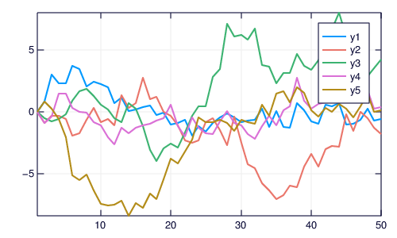
Parametric plots
Plot function pair (x(u), y(u)).
# /Users/michael/.julia/v0.5/Plots/src/examples.jl, line 35: plot(sin,(x->begin # /Users/michael/.julia/v0.5/Plots/src/examples.jl, line 35: sin(2x) end),0,2π,line=4,leg=false,fill=(0,:orange))
Colors
Access predefined palettes (or build your own with the colorscheme method). Line/marker colors are auto-generated from the plot's palette, unless overridden. Set the z argument to turn on series gradients.
# /Users/michael/.julia/v0.5/Plots/src/examples.jl, line 42: y = rand(100) # /Users/michael/.julia/v0.5/Plots/src/examples.jl, line 43: plot(0:10:100,rand(11,4),lab="lines",w=3,palette=:grays,fill=0,α=0.6) # /Users/michael/.julia/v0.5/Plots/src/examples.jl, line 44: scatter!(y,zcolor=abs(y - 0.5),m=(:heat,0.8,stroke(1,:green)),ms=10 * abs(y - 0.5) + 4,lab="grad")
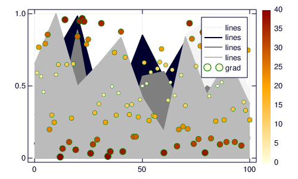
Global
Change the guides/background/limits/ticks. Convenience args xaxis and yaxis allow you to pass a tuple or value which will be mapped to the relevant args automatically. The xaxis below will be replaced with xlabel and xlims args automatically during the preprocessing step. You can also use shorthand functions: title!, xaxis!, yaxis!, xlabel!, ylabel!, xlims!, ylims!, xticks!, yticks!
# /Users/michael/.julia/v0.5/Plots/src/examples.jl, line 51: y = rand(20,3) # /Users/michael/.julia/v0.5/Plots/src/examples.jl, line 52: plot(y,xaxis=("XLABEL",(-5,30),0:2:20,:flip),background_color=RGB(0.2,0.2,0.2),leg=false) # /Users/michael/.julia/v0.5/Plots/src/examples.jl, line 53: hline!(mean(y,1) + rand(1,3),line=(4,:dash,0.6,[:lightgreen :green :darkgreen])) # /Users/michael/.julia/v0.5/Plots/src/examples.jl, line 54: vline!([5,10]) # /Users/michael/.julia/v0.5/Plots/src/examples.jl, line 55: title!("TITLE") # /Users/michael/.julia/v0.5/Plots/src/examples.jl, line 56: yaxis!("YLABEL",:log10)
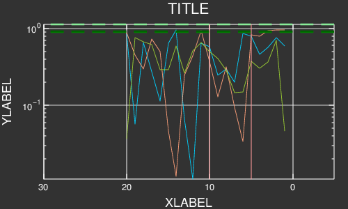
Images
Plot an image. y-axis is set to flipped
# /Users/michael/.julia/v0.5/Plots/src/examples.jl, line 69: import Images # /Users/michael/.julia/v0.5/Plots/src/examples.jl, line 70: img = Images.load(Pkg.dir("PlotReferenceImages","Plots","pyplot","0.7.0","ref1.png")) # /Users/michael/.julia/v0.5/Plots/src/examples.jl, line 71: plot(img)
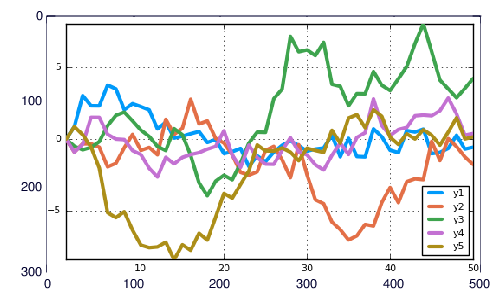
Arguments
Plot multiple series with different numbers of points. Mix arguments that apply to all series (marker/markersize) with arguments unique to each series (colors). Special arguments line, marker, and fill will automatically figure out what arguments to set (for example, we are setting the linestyle, linewidth, and color arguments with line.) Note that we pass a matrix of colors, and this applies the colors to each series.
# /Users/michael/.julia/v0.5/Plots/src/examples.jl, line 78: ys = Vector[rand(10),rand(20)] # /Users/michael/.julia/v0.5/Plots/src/examples.jl, line 79: plot(ys,color=[:black :orange],line=(:dot,4),marker=([:hex :d],12,0.8,stroke(3,:gray)))
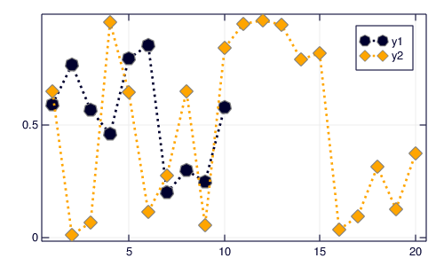
Build plot in pieces
Start with a base plot...
# /Users/michael/.julia/v0.5/Plots/src/examples.jl, line 86: plot(rand(100) / 3,reg=true,fill=(0,:green))
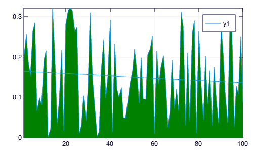
and add to it later.
# /Users/michael/.julia/v0.5/Plots/src/examples.jl, line 93: scatter!(rand(100),markersize=6,c=:orange)
Histogram2D
# /Users/michael/.julia/v0.5/Plots/src/examples.jl, line 100: histogram2d(randn(10000),randn(10000),nbins=20)
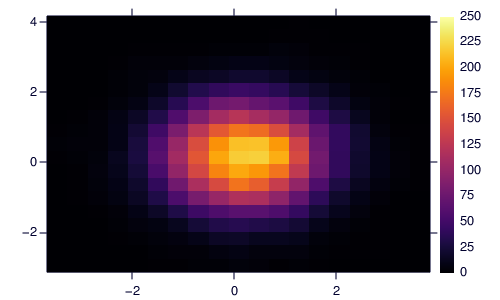
Line types
# /Users/michael/.julia/v0.5/Plots/src/examples.jl, line 107: linetypes = [:path :steppre :steppost :sticks :scatter] # /Users/michael/.julia/v0.5/Plots/src/examples.jl, line 108: n = length(linetypes) # /Users/michael/.julia/v0.5/Plots/src/examples.jl, line 109: x = Vector[sort(rand(20)) for i = 1:n] # /Users/michael/.julia/v0.5/Plots/src/examples.jl, line 110: y = rand(20,n) # /Users/michael/.julia/v0.5/Plots/src/examples.jl, line 111: plot(x,y,line=(linetypes,3),lab=map(string,linetypes),ms=15)
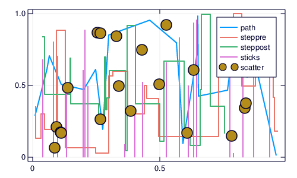
Line styles
# /Users/michael/.julia/v0.5/Plots/src/examples.jl, line 118: styles = (filter((s->begin # /Users/michael/.julia/v0.5/Plots/src/examples.jl, line 118: s in Plots.supported_styles() end),[:solid,:dash,:dot,:dashdot,:dashdotdot]))' # /Users/michael/.julia/v0.5/Plots/src/examples.jl, line 119: n = length(styles) # /Users/michael/.julia/v0.5/Plots/src/examples.jl, line 120: y = cumsum(randn(20,n),1) # /Users/michael/.julia/v0.5/Plots/src/examples.jl, line 121: plot(y,line=(5,styles),label=map(string,styles))
Marker types
# /Users/michael/.julia/v0.5/Plots/src/examples.jl, line 128: markers = (filter((m->begin # /Users/michael/.julia/v0.5/Plots/src/examples.jl, line 128: m in Plots.supported_markers() end),Plots._shape_keys))' # /Users/michael/.julia/v0.5/Plots/src/examples.jl, line 129: n = length(markers) # /Users/michael/.julia/v0.5/Plots/src/examples.jl, line 130: x = (linspace(0,10,n + 2))[2:end - 1] # /Users/michael/.julia/v0.5/Plots/src/examples.jl, line 131: y = repmat((reverse(x))',n,1) # /Users/michael/.julia/v0.5/Plots/src/examples.jl, line 132: scatter(x,y,m=(8,:auto),lab=map(string,markers),bg=:linen,xlim=(0,10),ylim=(0,10))
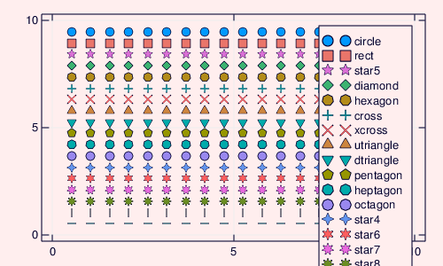
Bar
x is the midpoint of the bar. (todo: allow passing of edges instead of midpoints)
# /Users/michael/.julia/v0.5/Plots/src/examples.jl, line 139: bar(randn(99))
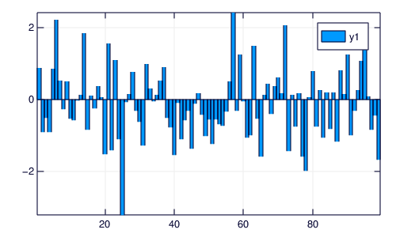
Histogram
# /Users/michael/.julia/v0.5/Plots/src/examples.jl, line 146: histogram(randn(1000),nbins=20)
Subplots
Use the layout keyword, and optionally the convenient @layout macro to generate arbitrarily complex subplot layouts.
# /Users/michael/.julia/v0.5/Plots/src/examples.jl, line 155: l = @layout([a{0.1h};b [c;d e]]) # /Users/michael/.julia/v0.5/Plots/src/examples.jl, line 156: plot(randn(100,5),layout=l,t=[:line :histogram :scatter :steppre :bar],leg=false,ticks=nothing,border=false)
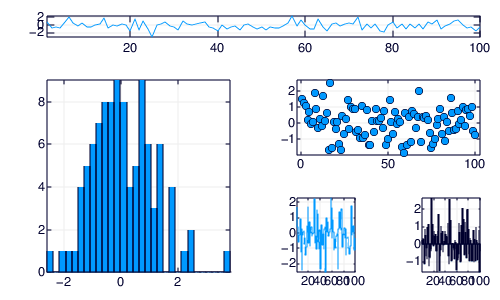
Adding to subplots
Note here the automatic grid layout, as well as the order in which new series are added to the plots.
# /Users/michael/.julia/v0.5/Plots/src/examples.jl, line 163: plot(Plots.fakedata(100,10),layout=4,palette=[:grays :blues :heat :lightrainbow],bg_inside=[:orange :pink :darkblue :black])
# /Users/michael/.julia/v0.5/Plots/src/examples.jl, line 170: srand(111) # /Users/michael/.julia/v0.5/Plots/src/examples.jl, line 171: plot!(Plots.fakedata(100,10))
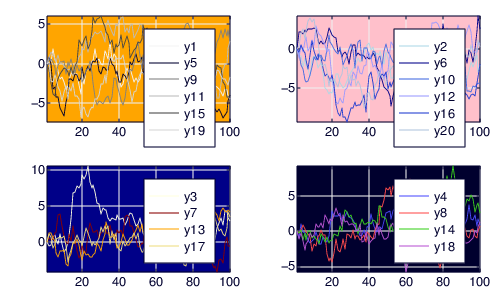
Open/High/Low/Close
Create an OHLC chart. Pass in a list of (open,high,low,close) tuples as your y argument. This uses recipes to first convert the tuples to OHLC objects, and subsequently create a :path series with the appropriate line segments.
# /Users/michael/.julia/v0.5/Plots/src/examples.jl, line 178: n = 20 # /Users/michael/.julia/v0.5/Plots/src/examples.jl, line 179: hgt = rand(n) + 1 # /Users/michael/.julia/v0.5/Plots/src/examples.jl, line 180: bot = randn(n) # /Users/michael/.julia/v0.5/Plots/src/examples.jl, line 181: openpct = rand(n) # /Users/michael/.julia/v0.5/Plots/src/examples.jl, line 182: closepct = rand(n) # /Users/michael/.julia/v0.5/Plots/src/examples.jl, line 183: y = OHLC[(openpct[i] * hgt[i] + bot[i],bot[i] + hgt[i],bot[i],closepct[i] * hgt[i] + bot[i]) for i = 1:n] # /Users/michael/.julia/v0.5/Plots/src/examples.jl, line 184: ohlc(y)
Annotations
The annotations keyword is used for text annotations in data-coordinates. Pass in a tuple (x,y,text) or a vector of annotations. annotate!(ann) is shorthand for plot!(; annotation=ann). Series annotations are used for annotating individual data points. They require only the annotation... x/y values are computed. A PlotText object can be build with the method text(string, attr...), which wraps font and color attributes.
# /Users/michael/.julia/v0.5/Plots/src/examples.jl, line 191: y = rand(10) # /Users/michael/.julia/v0.5/Plots/src/examples.jl, line 192: plot(y,annotations=(3,y[3],text("this is #3",:left)),leg=false) # /Users/michael/.julia/v0.5/Plots/src/examples.jl, line 193: annotate!([(5,y[5],text("this is #5",16,:red,:center)),(10,y[10],text("this is #10",:right,20,"courier"))]) # /Users/michael/.julia/v0.5/Plots/src/examples.jl, line 194: scatter!(linspace(2,8,6),rand(6),marker=(50,0.2,:orange),series_annotations=["series","annotations","map","to","series",text("data",:green)])
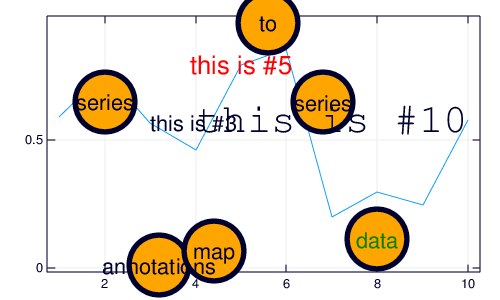
Custom Markers
A Plots.Shape is a light wrapper around vertices of a polygon. For supported backends, pass arbitrary polygons as the marker shapes. Note: The center is (0,0) and the size is expected to be rougly the area of the unit circle.
# /Users/michael/.julia/v0.5/Plots/src/examples.jl, line 201: verts = [(-1.0,1.0),(-1.28,0.6),(-0.2,-1.4),(0.2,-1.4),(1.28,0.6),(1.0,1.0),(-1.0,1.0),(-0.2,-0.6),(0.0,-0.2),(-0.4,0.6),(1.28,0.6),(0.2,-1.4),(-0.2,-1.4),(0.6,0.2),(-0.2,0.2),(0.0,-0.2),(0.2,0.2),(-0.2,-0.6)] # /Users/michael/.julia/v0.5/Plots/src/examples.jl, line 204: x = 0.1:0.2:0.9 # /Users/michael/.julia/v0.5/Plots/src/examples.jl, line 205: y = 0.7 * rand(5) + 0.15 # /Users/michael/.julia/v0.5/Plots/src/examples.jl, line 206: plot(x,y,line=(3,:dash,:lightblue),marker=(Shape(verts),30,RGBA(0,0,0,0.2)),bg=:pink,fg=:darkblue,xlim=(0,1),ylim=(0,1),leg=false)
Contours
Any value for fill works here. We first build a filled contour from a function, then an unfilled contour from a matrix.
# /Users/michael/.julia/v0.5/Plots/src/examples.jl, line 214: x = 1:0.5:20 # /Users/michael/.julia/v0.5/Plots/src/examples.jl, line 215: y = 1:0.5:10 # /Users/michael/.julia/v0.5/Plots/src/examples.jl, line 216: f(x,y) = begin # /Users/michael/.julia/v0.5/Plots/src/examples.jl, line 216: (3x + y ^ 2) * abs(sin(x) + cos(y)) end # /Users/michael/.julia/v0.5/Plots/src/examples.jl, line 217: X = repmat(x',length(y),1) # /Users/michael/.julia/v0.5/Plots/src/examples.jl, line 218: Y = repmat(y,1,length(x)) # /Users/michael/.julia/v0.5/Plots/src/examples.jl, line 219: Z = map(f,X,Y) # /Users/michael/.julia/v0.5/Plots/src/examples.jl, line 220: p1 = contour(x,y,f,fill=true) # /Users/michael/.julia/v0.5/Plots/src/examples.jl, line 221: p2 = contour(x,y,Z) # /Users/michael/.julia/v0.5/Plots/src/examples.jl, line 222: plot(p1,p2)
Pie
# /Users/michael/.julia/v0.5/Plots/src/examples.jl, line 229: x = ["Nerds","Hackers","Scientists"] # /Users/michael/.julia/v0.5/Plots/src/examples.jl, line 230: y = [0.4,0.35,0.25] # /Users/michael/.julia/v0.5/Plots/src/examples.jl, line 231: pie(x,y,title="The Julia Community",l=0.5)
3D
# /Users/michael/.julia/v0.5/Plots/src/examples.jl, line 238: n = 100 # /Users/michael/.julia/v0.5/Plots/src/examples.jl, line 239: ts = linspace(0,8π,n) # /Users/michael/.julia/v0.5/Plots/src/examples.jl, line 240: x = ts .* map(cos,ts) # /Users/michael/.julia/v0.5/Plots/src/examples.jl, line 241: y = (0.1ts) .* map(sin,ts) # /Users/michael/.julia/v0.5/Plots/src/examples.jl, line 242: z = 1:n # /Users/michael/.julia/v0.5/Plots/src/examples.jl, line 243: plot(x,y,z,zcolor=reverse(z),m=(10,0.8,:blues,stroke(0)),leg=false,cbar=true,w=5) # /Users/michael/.julia/v0.5/Plots/src/examples.jl, line 244: plot!(zeros(n),zeros(n),1:n,w=10)

Groups and Subplots
# /Users/michael/.julia/v0.5/Plots/src/examples.jl, line 262: group = rand(map((i->begin # /Users/michael/.julia/v0.5/Plots/src/examples.jl, line 262: "group $(i)" end),1:4),100) # /Users/michael/.julia/v0.5/Plots/src/examples.jl, line 263: plot(rand(100),layout=@layout([a b;c]),group=group,linetype=[:bar :scatter :steppre])
Polar Plots
# /Users/michael/.julia/v0.5/Plots/src/examples.jl, line 270: Θ = linspace(0,1.5π,100) # /Users/michael/.julia/v0.5/Plots/src/examples.jl, line 271: r = abs(0.1 * randn(100) + sin(3Θ)) # /Users/michael/.julia/v0.5/Plots/src/examples.jl, line 272: plot(Θ,r,proj=:polar,m=2)
Heatmap, categorical axes, and aspect_ratio
# /Users/michael/.julia/v0.5/Plots/src/examples.jl, line 279: xs = [string("x",i) for i = 1:10] # /Users/michael/.julia/v0.5/Plots/src/examples.jl, line 280: ys = [string("y",i) for i = 1:4] # /Users/michael/.julia/v0.5/Plots/src/examples.jl, line 281: z = float((1:4) * (1:10)') # /Users/michael/.julia/v0.5/Plots/src/examples.jl, line 282: heatmap(xs,ys,z,aspect_ratio=1)
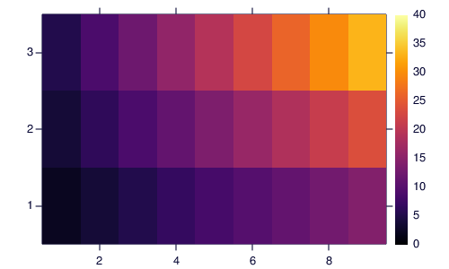
Layouts, margins, label rotation, title location
# /Users/michael/.julia/v0.5/Plots/src/examples.jl, line 289: plot(rand(100,6),layout=@layout([a b;c]),title=["A" "B" "C"],title_location=:left,left_margin=[20mm 0mm],bottom_margin=50px,xrotation=60)
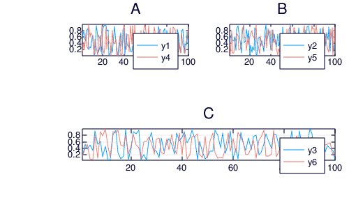
- Supported arguments:
annotations,arrow,aspect_ratio,background_color,background_color_inside,background_color_legend,background_color_outside,background_color_subplot,bar_width,bins,bottom_margin,color_palette,colorbar,discrete_values,fillalpha,fillcolor,fillrange,flip,foreground_color,foreground_color_axis,foreground_color_border,foreground_color_grid,foreground_color_legend,foreground_color_subplot,foreground_color_text,grid,group,guide,guidefont,html_output_format,inset_subplots,label,layout,left_margin,legend,legendfont,levels,lims,linealpha,linecolor,linestyle,linewidth,link,margin,marker_z,markeralpha,markercolor,markershape,markersize,markerstrokealpha,markerstrokecolor,markerstrokewidth,match_dimensions,normalize,orientation,overwrite_figure,polar,primary,projection,quiver,ribbon,right_margin,scale,series_annotations,seriesalpha,seriescolor,seriestype,show,size,smooth,subplot,subplot_index,tickfont,ticks,title,top_margin,weights,window_title,x,xdiscrete_values,xerror,xflip,xforeground_color_axis,xforeground_color_border,xforeground_color_text,xguide,xguidefont,xlims,xlink,xscale,xtickfont,xticks,y,ydiscrete_values,yerror,yflip,yforeground_color_axis,yforeground_color_border,yforeground_color_text,yguide,yguidefont,ylims,ylink,yscale,ytickfont,yticks,z,zdiscrete_values,zflip,zforeground_color_axis,zforeground_color_border,zforeground_color_text,zguide,zguidefont,zlims,zlink,zscale,ztickfont,zticks - Supported values for linetype:
:contour,:heatmap,:image,:path,:path3d,:pie,:scatter,:scatter3d,:shape,:surface,:wireframe - Supported values for linestyle:
:auto,:dash,:dashdot,:dashdotdot,:dot,:solid - Supported values for marker:
:+,:auto,:circle,:cross,:diamond,:dtriangle,:heptagon,:hexagon,:hline,:ltriangle,:none,:octagon,:pentagon,:rect,:rtriangle,:star4,:star5,:star6,:star7,:star8,:utriangle,:vline,:x,:xcross(Automatically generated: 2017-05-31T13:21:10.29)